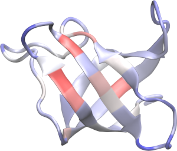

Protein conformational changes
Consider these two states of a model protein, a native and a denatured (straight chain) state, obtained from a simulation. Here the conformational change could be of any kind. We load the structures of the two states:
using PDBTools
native_state = read_pdb(PDBTools.MJC_NATIVE, "protein")
desnat_state = read_pdb(PDBTools.MJC_DESNAT, "protein") Vector{Atom{Nothing}} with 1007 atoms with fields:
index name resname chain resnum residue x y z occup beta model segname index_pdb
1 N SER A 1 1 -0.132 2.450 -0.112 0.80 0.00 1 A 1
2 C SER A 1 1 0.350 0.332 -1.257 0.80 0.00 1 A 2
⋮
1006 CD2 HIS A 69 69 -43.020 -137.591 -42.249 0.80 0.00 1 A 1006
1007 HD2 HIS A 69 69 -42.287 -137.082 -41.638 0.50 0.00 1 A 1007The denatured state has a greater surface area than the native state. Thus, cosolvents that bind preferentially to the surface, as urea, should promote a stabilization of the denatured state. This is obtained with:
m = mvalue(native_state, desnat_state, "urea"; model=MoeserHorinek)MValue{MoeserHorinek} - 69 residues - cosolvent: "urea"
Total m-value: -1.2157167 kcal mol⁻¹
Backbone contributions: -0.713593 kcal mol⁻¹
Side-chain contributions: -0.5021237 kcal mol⁻¹Where the tot, bb and sc fields contain, respectively, the total, backbone and side-chain contributions. The MValue object contains, additionally, the contribution of the side chain and backbone of each amino acid residue type for the m-value, in the residue_contributions_bb and residue_contributions_sc fields.
We can set the beta fields (for example) of the atoms as the residue contributions:
for (ir, r) in enumerate(eachresidue(native_state)) # iterate over residues
# total contribution of residue ir
c_residue = m.residue_contributions_sc[ir] + m.residue_contributions_bb[ir]
for at in r # iterate over atoms in residue
at.beta = c_residue
end
end
write_pdb("contrib.pdb", native_state)And with that get an image (here produced with VMD) of the contributions of the residues to the transfer free energies:
